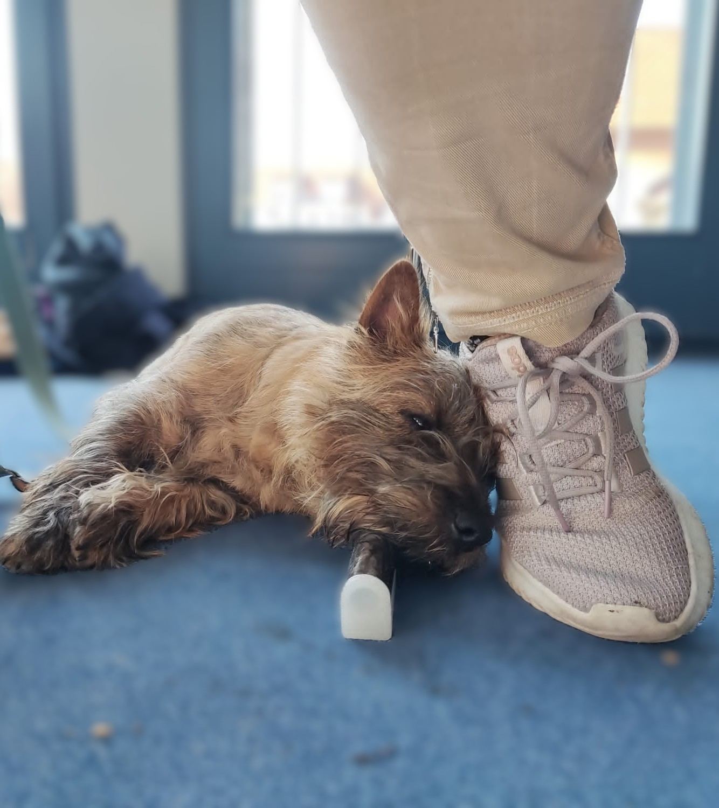
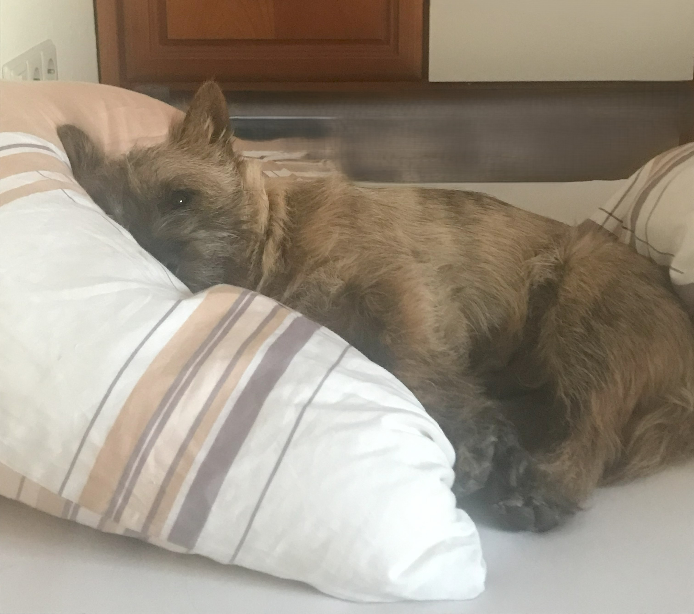
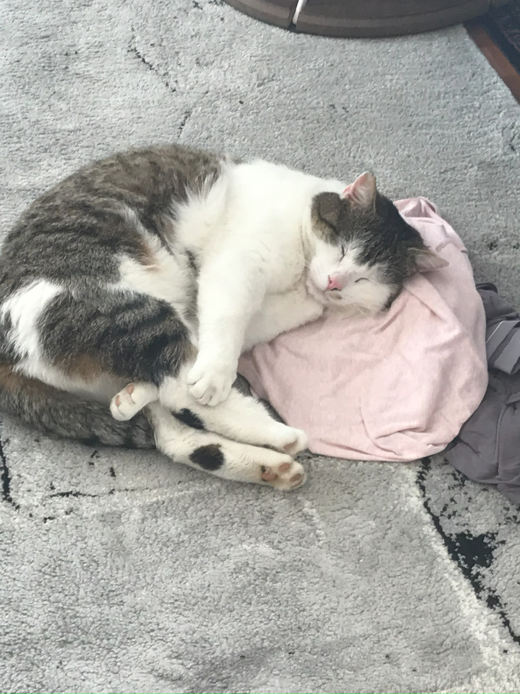
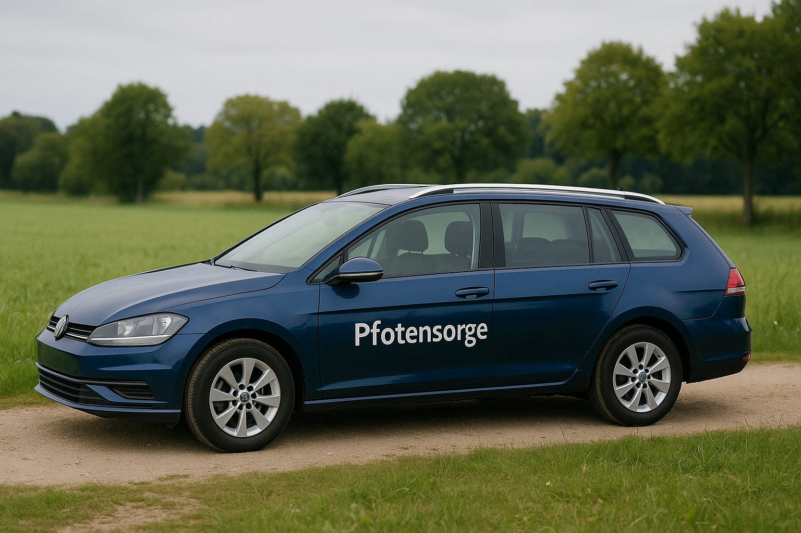
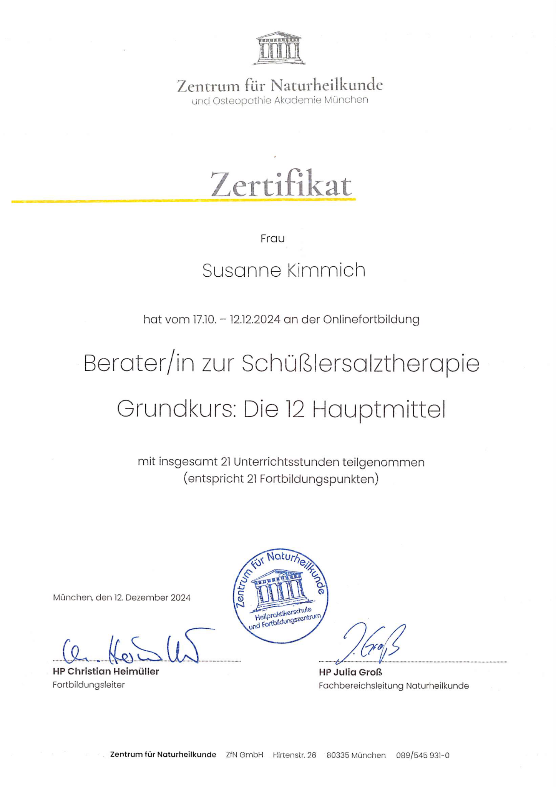

Für manche ist es „nur ein Hund“, „nur eine Katze“.
Für dich ist es ein Gefährte, ein Seelenwesen –
Teil deiner Familie, deines Lebens, deines Herzens.
Du spürst, wenn es leidet – auch ohne Worte.
Du suchst jemanden, der das ebenfalls sieht. Der zuhört. Der mitfühlt und der hilft.
Ich begleite Tiere und Menschen, die verbunden sind.
Meine Arbeit beginnt nicht mit Methoden – sondern mit echtem Verstehen.
Wenn dein Tier für dich so wertvoll ist wie ein Kind –
dann bist du bei mir richtig.
Tiere gehören für mich ganz selbstverständlich zur Familie. Als vierfache Mama, umgeben von Hund, Katzen, Hahn und Hennen, weiß ich, wie tief die Verbindung zu unseren tierischen Gefährten geht – und wie sehr ihr Wohlbefinden unser eigenes beeinflusst. Viele Arten von Tiere haben meinen Lebensweg begleitet: Hasen, Meerschweinchen, Goldhamster, Bianca unsere Lachtaube, eine weisse Maus, und nicht zuletzt auch ein Wellensittich - und alle hatten einen Namen. Auch Pferde durfte ich schon behandeln und reiten, aber ehrlicherweise muss ich gestehen, dass es auf das Pferd ankommt, ob wir miteinander können. Ich fasse gerne Echsen, Blindschleichen und Schlangen an, ich finde ihre Haut so wunderbar...
...
Mit meiner mobilen Tierheilpraxis komme ich zu Dir nach Hause – dahin, wo Dein Gefährte sich am sichersten fühlt. Ich nehme mir Zeit für eine liebevolle, ganzheitliche Begleitung. Dabei schaue ich nicht nur auf Symptome, sondern auf das große Ganze: Wesen, Umgebung, Geschichte.
Ob bei chronischen Beschwerden, seelischem Ungleichgewicht oder einfach dem Wunsch nach natürlicher Begleitung – ich bin für Dich und Dein Tier da. Sanft, individuell und mit offenem Herzen.
Wertschätzung & Vertrauen

Ich arbeite mit Menschen, die bereit sind, wirklich hinzuschauen.
Die nicht nach schnellen Rezepten suchen, sondern nach einem tieferen Weg.
Die spüren, dass ihr Tier ihnen etwas sagen will – und es verdient, ernst genommen zu werden.
Wenn du nur eine schnelle Lösung suchst, bin ich vielleicht nicht die Richtige.
Wenn du dein Tier aber liebst wie ein Kind, begleite ich euch mit allem, was ich habe:
Mit Gefühl, Wissen und Geduld.
Über mich
Manchmal führt das Leben uns auf unerwartete, aber wunderbare Wege. Ursprünglich bin ich ausgebildete IT-Kauffrau mit einem abgeschlossenem betriebswirtschaftlichen Studium im Gepäck. Viele Jahre war ich in der digitalen Welt zuhause – doch mein Herz schlug immer für Tiere.
Dieser Herzensweg führte mich schließlich zur ganzheitlichen Tierheilkunde. Ich absolvierte meine fundierte Ausbildung zur Tierheilpraktikerin bei der Paracelsus Schule und gründete meine mobile Praxis „Pfotensorge“. Heute begleite ich Tiere mit Verstand, Intuition und großer Hingabe – direkt da, wo sie sich am wohlsten fühlen.
Ich weiß wie wichtig eine achtsame und individuelle Betreuung ist – für jedes Tier und seine Menschen.
Ich bin Tierheilpraktikerin aus tiefster Überzeugung – und mit ganzem Herzen für Tiere und ihre Menschen da.
Leistungen
Jedes Tier ist einzigartig – genau wie seine Bedürfnisse.


In meiner mobilen Praxis begleite ich dich und dein Tier ganzheitlich, mit viel Zeit, Ruhe und Herz. Ob feine Wesensveränderungen, chronische Beschwerden oder akute Themen – ich nehme mir Zeit, genau hinzuschauen und gemeinsam mit dir den passenden Weg zu finden.
Ich arbeite sanft, naturheilkundlich und individuell – abgestimmt auf das Wesen und die Geschichte deines Pfotengefährten:
...
Homöopathie – klassisch, individuell und auf die Konstitution abgestimmt
Phytotherapie (z. B. Ceres-Tinkturen) – Pflanzenkraft mit Tiefe
Schüßler Salze – sanfte Mineralstofftherapie
Bachblüten – feine Seelenbegleiter bei Stress, Angst oder Unruhe
Energetische Behandlung – wenn Worte fehlen, aber Berührung wirkt

Ich komme zu euch mit meinem blauen Praxisauto – ausgestattet für alles, was ich für die Behandlung vor Ort brauche. So bleibt dein Tier ganz in seiner gewohnten Umgebung, was für viele Tiere deutlich weniger Stress bedeutet.
Meine Qualifikationen

Schüßlersalze Grundkurs (Zentrum für Naturheilkunde)
Einsatzgebiet
Ich bin mobil für Sie unterwegs im Landkreis Rottweil und Freudenstadt.
Außerhalb dieses Bereichs biete ich gerne telefonische oder schriftliche Beratung an.
Diese Karte wird von OpenStreetMap eingebettet. Beim Laden werden personenbezogene Daten (z. B. IP-Adresse) an Drittanbieter übermittelt.
Kundenstimmen
„Frau Kimmich ist sehr einfühlsam mit unserem Hund umgegangen. Wir fühlen uns bestens beraten.“
„Endlich jemand, der auch auf die Ernährung achtet. Meine Katze frisst wieder – danke!“
„Kompetent, herzlich und zuverlässig. Absolute Empfehlung!“
Kontakt
Mobile Tierheilpraxis Pfotensorge
Postanschrift: wird auf Anfrage bekannt gegeben
Die Praxis ist ausschließlich mobil tätig.
Der Schutz Deiner persönlichen Daten ist mir ein besonderes Anliegen. Die Daten werden ausschließlich auf Grundlage der gesetzlichen Bestimmungen (DSGVO, TMG) verarbeitet.
Kontakt mit mir
Wenn Sie per E-Mail oder telefonisch Kontakt mit mir aufnehmen, werden die angegebenen Daten zwecks Bearbeitung der Anfrage und für den Fall von Anschlussfragen bei mir gespeichert. Diese Daten gebe ich nicht ohne Deine Einwilligung weiter.
OpenStreetMap
Zur Darstellung meines Einsatzgebietes nutze ich Kartendienste von OpenStreetMap (osm.org). Beim Aufrufen dieser Karte werden möglicherweise Daten (z. B. IP-Adresse) an OpenStreetMap übertragen. Weitere Informationen dazu finden Sie unter osmfoundation.org.
Ihre Rechte
Ihnen stehen grundsätzlich die Rechte auf Auskunft, Berichtigung, Löschung, Einschränkung, Datenübertragbarkeit und Widerspruch zu. Wenn Sie glauben, dass die Verarbeitung Ihrer Daten gegen das Datenschutzrecht verstößt, kontaktieren Sie mich bitte.
Impressum
Angaben gemäß § 5 TMG:
Mobile Tierheilpraxis Pfotensorge
Postfach [deine Postfachnummer]
78737 Fluorn-Winzeln